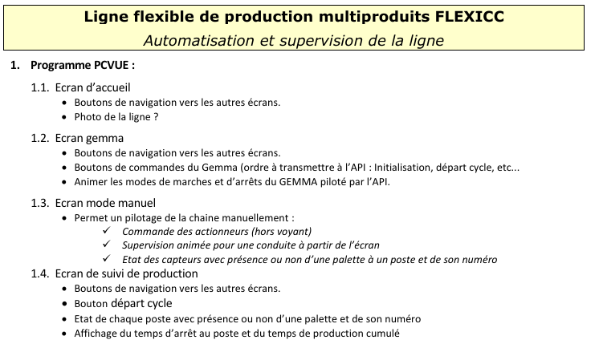
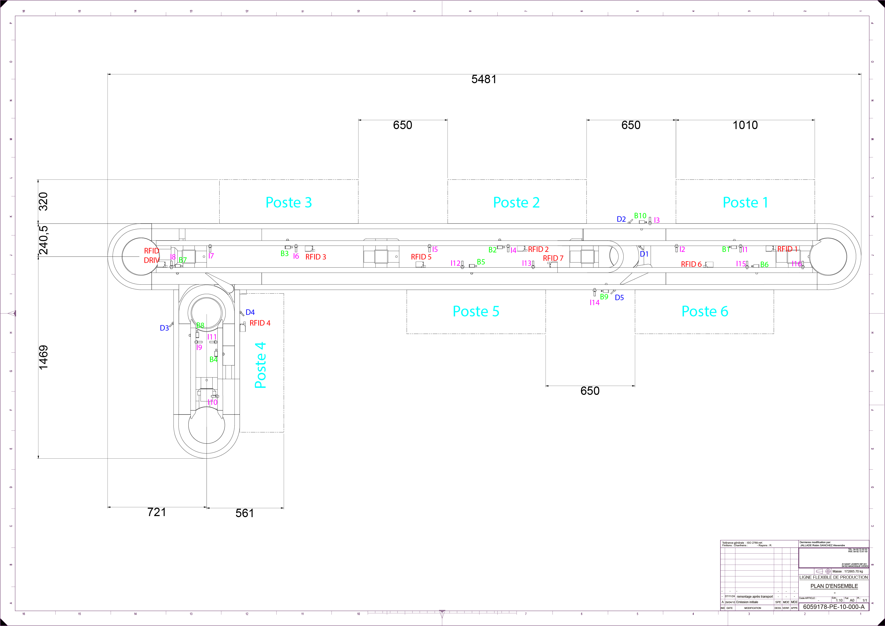
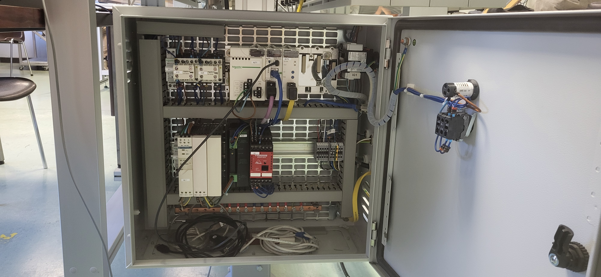

MAINTENIR
Novice B.U.T. 2 Intervenir sur un système pour effectuer une opération de maintenance
Ressources
Les ressources utilisées pour cette compétence sont :
Ressources logicielles :
- Utilisation de "PcVue" pour la supervision.
- Utilisation de "Unity Pro"(ancêtre de “ControlExpert”) pour la programmation des automates.
- Utilisation de "Excel" pour organiser la nomenclature et l’adressagedes variables.
- Utilisation de "Word" pour rédiger des rapports réguliers.
Ressources théoriques :
- Analyse de schémas électriques.
- Modification de plans mécaniques afin de pouvoir travailler à domicile.
Ressources matérielles :
- Utilisation d’un automate “Schneider Modicon M340”.
- Utilisation de bus de terrain ( "CANopen" et "AS-i- Actuator Sensor Interface" ).
- Mise en place d’une communication Ethernetentre la supervision et l’automate (via un câble RJ45 blindé).
- Déplacement de capteurs.
Composante essentiel
- CE1 : En adoptant une communication proactive avec les différents acteurs :
- CE2 : En adoptant une approche holistique intégrant les nouvelles technologies et la transformation digitale :
Lors de notre SAÉ Automatisme, j’ai dû collaborer avec mon binôme pour coordonner la supervision et la programmation de l’automate. Nous avons également remis des rapports réguliers à notre supérieur (professeur) pour présenter nos avancées. De plus, j’ai contacté le service client de “PcVue” pour obtenir des informations sur la version 8.10 du logiciel, qui est ancienne et dont la documentation est difficile à trouver en ligne.
Notre priorité principale tout au long du projet était de répondre aux exigences du cahier des charges établi par le client (professeur).

Situations professionnelles
- Maintenance corrective, préventive et améliorative dans les domaines de la gestion, production et maîtrise de l’énergie.
- Maintenance corrective, préventive et améliorative dans les process industriels.
- Maintenance corrective, préventive et améliorative dans les systèmes embarqués.
Apprentissages critiques
- APC1 : Exécuter l’entretien et le contrôle
d’un système en respectant une procédure.
- APC2 :Exécuter une opération de maintenance
(corrective, préventive, améliorative).
- APC3 :Diagnostiquer un dysfonctionnement dans
un système.
- APC4 :Identifier la cause racine du
dysfonctionnement.
SAé: Auto
La SAÉ Automatisme consiste à remettre en service une ligne de production flexible, qui
n'avait pas été utilisée depuis 2 ans.
APC2 :
Lors de notre SAÉ Auto, nous avons dû remettre en service une ligne de
production
flexible qui n'avait pas fonctionné depuis deux ans. Pour faciliter la compréhension de
la machine et identifier les dysfonctionnements, j'ai réalisé un schéma détaillé de la
ligne, répertoriant la position de tous les capteurs.

APC4 :
Nous avons ensuite pu identifier l'origine des problèmes en analysant les voyants de la
machine et les réponses des capteurs.

La SAÉ Automatisme consiste à remettre en service une ligne de production flexible, qui n'avait pas été utilisée depuis 2 ans.
APC2 :
Lors de notre SAÉ Auto, nous avons dû remettre en service une ligne de production flexible qui n'avait pas fonctionné depuis deux ans. Pour faciliter la compréhension de la machine et identifier les dysfonctionnements, j'ai réalisé un schéma détaillé de la ligne, répertoriant la position de tous les capteurs.

APC4 :
Nous avons ensuite pu identifier l'origine des problèmes en analysant les voyants de la machine et les réponses des capteurs.
